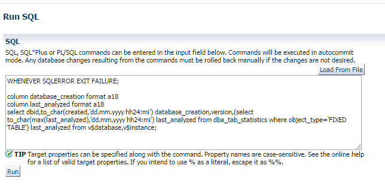

|
|
This was first published on https://blog.dbi-services.com/fixed-table-automatic-statistic-gathering-in-12c (2016-04-04)
Republishing for new followers. The content is related to the the versions available at the publication date
Before 12c, the fixed stats statistics were not gathered automatically. In 12c this has changed: even when you have never gathered fixed objects statistics you can see that you have statistics for X$ tables. That may be better than having no statistics at all, but it doesn’t replace manual gathering at the right time.
First you may have a doubt because the Best Practices for Gathering Optimizer Statistics with Oracle Database 12c white paper, which is by the way excellent, states the following: The automatic statistics gathering job does not gather fixed object statistics.
Actually, this was probably written before the new behavior has been implemented. 12c Documentation is clear about that: Oracle Database automatically gathers fixed object statistics as part of automated statistics gathering if they have not been previously collected.
When a table has no statistics, the optimizer usually do dynamic sampling. It’s not the case with fixed tables. Without statistics it uses pre-defined values. Note that SQL Plan Directives generated for predicates on fixed tables seem to be only of reason ‘JOIN CARDINALITY MISESTIMATE’ or ‘GROUP BY CARDINALITY MISESTIMATE’ and I’ve not seen any ‘SINGLE TABLE CARDINALITY MISESTIMATE’ for them yet.
I’ve checked statistics on fixed objects with the following query on multiple databases in 11g and 12c:  Here is the code:
column database_creation format a18 column last_analyzed format a18 select dbid,to_char(created,'dd.mm.yyyy hh24:mi') database_creation,version,(select to_char(max(last_analyzed),'dd.mm.yyyy hh24:mi') last_analyzed from dba_tab_statistics where object_type='FIXED TABLE') last_analyzed from v$database,v$instance;
I know that dbms_stats.gather_fixed_objects_stats has never been run manually on those databases. Here is the result:
The 11g databases have no statistics for fixed objects. The 12c have statistics seem to have been collected on the first maintenance window that came after the database creation.
Here is a full sample on many databases:
DBID DATABASE_CREATION VERSION LAST_ANALYZED
3512849711 04.03.2015 14:27 12.1.0.2.0 04.03.2015 22:02
2742730342 27.02.2015 16:25 12.1.0.2.0 27.02.2015 22:01
947204019 04.03.2015 10:38 11.2.0.4.0
3119262236 23.04.2015 08:45 11.2.0.4.0
3086459761 07.09.2015 10:29 11.2.0.4.0
3834994345 05.05.2015 16:58 11.2.0.4.0
2416611527 23.11.2015 15:09 11.2.0.4.0
1308353219 02.06.2015 08:48 12.1.0.2.0 02.06.2015 22:02
2748602325 02.03.2016 10:56 12.1.0.2.0
2100385935 29.03.2016 10:08 12.1.0.2.0
2693495113 29.07.2015 16:41 12.1.0.2.0 29.07.2015 22:03
1838239625 02.05.2013 10:40 12.1.0.2.0 11.08.2015 11:01
2459965412 06.02.2015 12:36 12.1.0.2.0 06.02.2015 22:01
1973550543 25.09.2015 10:05 12.1.0.2.0 25.09.2015 22:03
2777782141 15.09.2015 10:05 12.1.0.2.0 15.09.2015 22:03
1972863322 20.03.2015 09:33 12.1.0.2.0 07.05.2015 12:14
2598026599 30.04.2015 13:38 12.1.0.2.0 30.04.2015 22:02
392835176 02.12.2014 09:12 12.1.0.2.0 21.10.2015 22:05
3648145067 26.11.2014 12:38 12.1.0.2.0 18.12.2014 22:00
1427432880 08.01.2015 16:52 12.1.0.2.0 10.03.2015 11:16
3916227032 10.12.2014 10:47 12.1.0.2.0 10.12.2014 22:01
3410982685 13.05.2015 15:00 12.1.0.2.0 13.05.2015 22:03
3818933859 02.12.2015 07:50 11.2.0.4.0
4043114408 20.04.2015 12:06 12.1.0.2.0 20.04.2015 22:01
1021147402 04.01.2016 15:04 12.1.0.2.0
3248561100 05.05.2015 16:31 12.1.0.2.0 12.06.2015 22:02
Only few exceptions because some databases have the automatic job disabled.
We know it for a long time, CBO needs statistics. And it’s a good idea to gather them when they are not present. However, this is not a reason to do nothing manually. When run at 22:00 (the default beginning of the maintenance window) it’s probable that many X$ tables do not have the same number of rows than during high activity. Especially when it’s just after the database has been created and nothing has run yet. Session and processes structures have probably few rows. Memory structures are probably small. Our recommendation is to run dbms_stats.gather_fixed_objects_stats at a time where you have significant activity. Then no need to run it again frequently. If you scaled-up some resource configuration (mode memory, more CPU, higher connection pool) then you may run it again. And don’t worry, there are some critical tables that are skipped by the gathering process and still use some default.
|
|
{kind=link}
{kind=link}
Another interesting post Franck, thanks. I have been reading SQL Tuning guide thoroughly lately and it brings a lot of details on how it all works together.